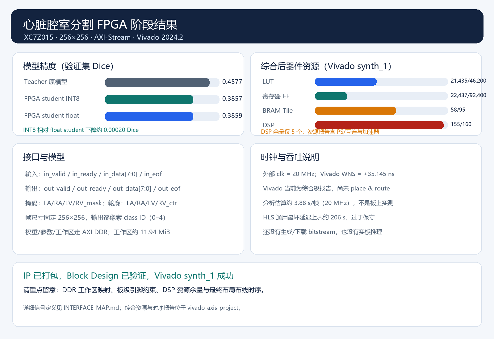

clk/rst + 单像素 AXI-Stream 输入输出；out_data 输出类别，TUSER sideband 映射四腔 mask 与轮廓信号。输入输出握手遵循 valid/ready。
查看完整接口说明 · Vivado 资源报告 · Vivado 时序报告 · 打包 HLS IP
Vivado 综合和 20 MHz 时序约束检查已通过；WNS +35.145 ns。当前结果不含 place & route 和真实 FPGA 板上运行。帧耗时是基于固定网络层形状的分析估算，尚未实测。